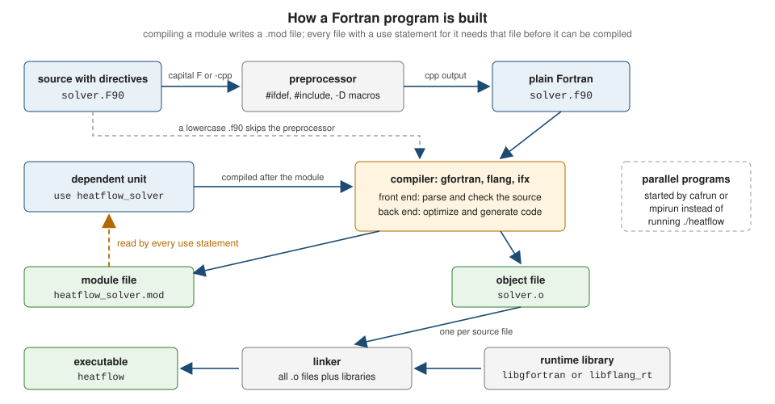

Getting Started
|
This content was generated with the assistance of AI and should be verified against the official documentation before being relied on in production. |
This page is written against Fortran 2023 (ISO/IEC 1539-1:2023, text of the final draft J3/23-007r1). Every program on it was compiled and run with GNU Fortran 16.2 (-std=f2023 -Wall -Wextra -pedantic -fimplicit-none -fcheck=all) and, where the page says so, with LLVM Flang 23, on 2026-10-18. It is the first stop of this reference: it shows what the language is for, how to get a working toolchain, how a Fortran program becomes an executable, how a small project is organised with the Fortran Package Manager (fpm), and how to read what the compiler and the runtime tell you when something is wrong. The language itself starts on Program Structure and Source Form; the history of the standard and the compiler landscape are on History, Standards and Compilers.
Throughout the section the examples follow one small original scenario, heatflow: a program that computes how heat spreads on a rectangular plate. It starts here as a 30-line kernel inside a three-file fpm project and grows, page by page, into modules, derived types, submodules, namelist configuration, parallel variants and bindings to C, Python and MATLAB.
What Fortran is used for today
Fortran (the name comes from FORmula TRANslation) was created in 1957 and is still the language in which a large part of the world’s numerical software is written and, more importantly, still being written. It is a compiled, statically typed, array-oriented language standardized by ISO/IEC, designed so that a compiler can turn mathematical formulas over large arrays into fast machine code.
| Area | Typical use |
|---|---|
Weather, climate and ocean models |
Numerical weather prediction and climate models integrate partial differential equations on global grids for millions of time steps on supercomputers. Many operational and research codes are Fortran and are extended every year. |
Computational fluid dynamics and engineering |
Finite-difference, finite-volume and finite-element solvers for flow, structures and combustion, often with decades of validated physics inside them. |
Chemistry, physics and materials |
Electronic-structure, molecular-dynamics, plasma, astrophysics and nuclear codes, with new codes written in modern Fortran next to established ones. |
Numerical libraries |
The reference implementations of BLAS and LAPACK, the dense linear algebra libraries that NumPy, MATLAB, R and Julia call into, are Fortran. Vendor-tuned BLAS and LAPACK keep the same Fortran-style interfaces. |
HPC benchmarks and parallel programming |
Benchmark suites such as the NAS Parallel Benchmarks have Fortran versions, and the language has native parallel features (coarrays and |
Source: fortran-lang.org: Learn Fortran
Four properties explain why the language keeps this role.
- Arrays are first-class values
-
Whole-array expressions, array sections, the
whereconstruct, reductions such assumandmaxval, and array-returning intrinsics are part of the language, not a library. The compiler sees the intent ofu = 0.25_dp*(a + b)instead of a loop it has to analyse. The array chapters start at Arrays Fundamentals. - No aliasing by default
-
The standard forbids a procedure to modify, through one dummy argument, data that it can also reach through another dummy argument or a global (J3/23-007r1, 15.5.2.14), and pointers must be declared with the
pointerortargetattribute to alias anything. A compiler can therefore keep values in registers and vectorize loops without therestrictannotations C needs. The price is that the programmer, not the compiler, is responsible for never violating the rule. - Mature optimizing compilers
-
Compilers for the language have been tuned for numerical code for nearly seventy years, and the open-source ones (GNU Fortran and LLVM Flang) share their back ends with the C and C++ compilers.
- A stable standard
-
A conforming Fortran 77 or Fortran 90 program is still accepted by current compilers, because the committee deletes features very rarely and marks the ones it wants to retire as obsolescent first. A numerical code can outlive many hardware generations. Parallel features were added to the language itself: coarrays in Fortran 2008 and
do concurrentwith itsreducelocality specifier in Fortran 2023.
Where the books this section draws on are outdated: they present the language, not the ecosystem. Modern Fortran Explained (Fortran 2023 edition) contains no installation, compiler-invocation or package-manager guidance, so everything from the next section on comes from the compiler manuals and the fortran-lang.org tutorials.
Installing a compiler
The standard describes the language, not a command line, so every compiler has its own driver, options and module-file format. Four are free to use and appear in this reference.
| Compiler | Command | Notes |
|---|---|---|
GNU Fortran (gfortran), part of GCC 16.2 |
|
Mature, free, available on Linux, macOS and Windows. |
LLVM Flang, from LLVM 23 |
|
The LLVM project’s Fortran compiler. The executable was called |
Intel ifx (oneAPI) |
|
The LLVM-based Intel compiler. The older |
LFortran |
|
An interactive compiler built on its own intermediate representation. Its home page describes it as alpha: it is not expected to compile third-party codes yet. It also offers a WebAssembly build that runs in the browser, which is the quickest way to try a few statements without installing anything. |
Commercial compilers that are not used in this reference but are widely deployed on clusters are NAG Fortran, the HPE Cray Compiling Environment, NVIDIA’s nvfortran (the compiler that offloads do concurrent to GPUs) and AMD’s and IBM’s LLVM-based compilers. The community list is on fortran-lang.org: Compilers; treat its entry for ifort as stale.
Source: fortran-lang.org: Choosing a compiler, GNU Fortran manual: Options controlling Fortran dialect, LLVM Flang: Fortran standards support and LFortran
Installing GNU Fortran
The fortran-lang.org installation page lists the options per platform. On the common ones:
# Debian, Ubuntu, Mint
sudo apt install gfortran
# Fedora, RHEL and derivatives
sudo dnf install gcc-gfortran
# Arch and derivatives
sudo pacman -S gcc-fortran
# macOS with Homebrew (gfortran is part of the gcc formula)
brew install gcc
# Check what you got
gfortran --versionOn Windows the fortran-lang.org page recommends the Windows Subsystem for Linux for a Unix-like workflow and also lists MinGW-w64 and MSYS2 builds. The version numbers quoted on that page (GCC 10 to 12) are old: package managers usually offer a newer release, so run gfortran --version and read the release notes of what you have before assuming a feature is available.
Installing LLVM Flang and the others
Flang is distributed with the LLVM releases and by several Linux distributions; the examples of this reference were also checked with the Debian-based flang-23 package from apt.llvm.org (a post-release build of LLVM 23), which needs the LLVM compiler-rt and OpenMP development packages next to the compiler for linking. Intel ifx comes with the oneAPI HPC toolkit. LFortran has its own installation page. In every case the check is the same two lines:
flang --version
ifx --versionSource: fortran-lang.org: Installing GFortran, LLVM Flang: Getting started, LFortran documentation and GNU Fortran project page
The program names, the options and the Fortran 2023 level differ between these compilers, and a program that one accepts another may reject. A portable program is therefore compiled with at least two of them; the heatflow examples of this reference are always checked with gfortran and Flang.
Editors and the fortls language server
For a list of IDEs, editors and tools with links to their official pages, see IDEs & Tools.
Any text editor works: Fortran sources are plain text. The fortran-lang.org guide lists Emacs, Vim and Neovim, Sublime Text, Notepad++ and Visual Studio Code, and, for full IDEs, Code::Blocks, Eclipse with Photran, Geany, Visual Studio with the Intel compiler, and the commercial NAG, Absoft, Plato and Simply Fortran. Several of the names on those pages are no longer maintained (the Atom editor, for example), so prefer the editors that have a language-server client.
The community language server is fortls. It provides completion, hover documentation, go-to-definition, find-references, rename, signature help and diagnostics, and it understands the module structure of a project. It is a Python package:
pip install fortlsVisual Studio Code users install the Modern Fortran extension (published by fortran-lang), which provides syntax highlighting, linting, language-server support (through fortls) and formatting; other editors (Neovim with its built-in LSP client, Emacs with eglot or lsp-mode, Helix, Sublime Text with LSP) configure fortls as the server for the fortran file type. fortls reads project settings from a .fortls file at the project root. The tools around the compiler (formatters, documentation generators, linters) are covered on Documentation and Editor Tooling.
"Hello, world!"
The smallest useful program has a program statement, the specification part (here just implicit none), one executable statement and end program. Save it as 01-hello.f90.
program hello
implicit none
print '(a)', "Hello, world!"
end program helloCompile and run it with any of the compilers:
gfortran 01-hello.f90 -o hello
flang 01-hello.f90 -o hello
ifx 01-hello.f90 -o hello
./helloHello, world!The program compiles without warnings under gfortran -std=f2023 -Wall -Wextra -pedantic -fimplicit-none -fcheck=all and produces the same output with Flang 23.
Source: fortran-lang.org: Hello, world! and J3/23-007r1 (Fortran 2023), 12.6 Data transfer statements and 14.1 Main program
What each line does:
-
program hellostarts the main program (J3/23-007r1, 14.1) and names it. Every executable has exactly one main program. The name has no other use; the matchingend program hellorepeats it so a compiler can check the pairing. -
implicit noneswitches off implicit typing. Without it, an undeclared name that starts withitonis silently an integer and any other is a real, so a misspelled variable becomes a new, uninitialised one (J3/23-007r1, 8.7). Every program unit in this reference starts withimplicit none. It is also available asimplicit none (type, external), which additionally requires explicit interfaces for external procedures; both forms are described with the rest of the declarations on Variables, Declarations and Attributes. Fortran 2028 marks default implicit typing obsolescent. -
print '(a)', "Hello, world!"writes to the default output unit. The first item is a format:'(a)'means "one character item, as is".print *, "Hello, world!"uses list-directed output instead, which lets the compiler choose the layout and starts the line with one blank in practice (the second program below shows it). Formats are covered on Format Specifications and Edit Descriptors. -
Fortran is case-insensitive:
PROGRAM Hello,program helloandPrintare the same. In free source form blanks separate tokens but are otherwise not significant, and a line may hold up to ten thousand characters (J3/23-007r1, 6.3.2.1), far more than the 132 characters older texts quote. -
!starts a comment that runs to the end of the line. There is no statement terminator: the end of the line ends the statement and&at the end of a line continues it.
The commands above are the whole build: the compiler reads one file, produces an object file, calls the linker and removes the intermediate files. The rest of this page is about what that hides.
How a program is built

The stages are, for one source file:
-
Preprocessing is optional and, unlike in C, not part of the language. The standard does not define a preprocessor, only the optional
includeline. Compilers run a C-style preprocessor (cpp) when the file name suggests it, typically a capitalFin the extension, or when asked with an option such as-cpp. -
Compilation parses and checks the source, optimizes it and generates machine code into an object file (
.o, or.objon Windows). When the file contains amoduleorsubmodule, the compiler also writes a module file (.mod) that records the public declarations of the module. A file withuse heatflow_kindscannot be compiled untilheatflow_kinds.modexists, which is why the build order matters and why build tools such as fpm scan the sources forusestatements. -
Linking joins the object files, the compiler’s runtime library (
libgfortranfor gfortran,libflang_rtfor Flang) and any libraries you name into the executable. The runtime library contains the input/output system, the support for intrinsic procedures that are not inlined, and the error-reporting code that prints the messages shown later on this page.
Programs that use coarrays or MPI are built the same way but are started by a launcher (cafrun for OpenCoarrays, mpirun for MPI) instead of by running the executable directly; see Coarrays, Images and Synchronization and MPI with mpi_f08.
The options used in this reference
All examples of this reference are checked with one fixed set of gfortran options. They are worth adopting for your own code from the first program.
| Option | Effect |
|---|---|
|
Accept only Fortran 2023 syntax and intrinsics and diagnose extensions. Other values are |
|
Warn about unused variables, possibly uninitialised variables, implicit conversions, and other likely mistakes. |
|
Warn about use of extensions and obsolescent features. Together with |
|
Behave as if |
|
Insert run-time checks: array bounds, array temporaries, unallocated and disassociated objects, recursion, loop variable modification, string lengths, memory allocation and invalid arguments to bit intrinsics. It slows the program and is for development builds. |
|
Debug information, so that backtraces show file names and line numbers and debuggers work. |
|
Optimization for production runs. Do not combine timing measurements with |
|
|
|
Force or disable the preprocessor; define a preprocessor macro. |
Backtraces on run-time errors are printed by default by modern gfortran (the environment variable GFORTRAN_ERROR_BACKTRACE and the option -fno-backtrace control them), so the -fbacktrace that older tutorials recommend is a no-op today. Flang 23 has no equivalent of -fcheck: the bounds-violation program in the diagnostics section runs without any message under it. The complete option reference, including the Flang and ifx equivalents, is on Compilers and Compiler Options.
File extensions
The standard says nothing about file names. It states that the means of specifying the source form of a program unit are processor dependent (J3/23-007r1, 6.3.1), so every compiler decides from the extension, and the extension also selects whether the preprocessor runs. The conventions of GNU Fortran, which Flang and Intel ifx largely follow, are these.
| Extension | Contents | Meaning |
|---|---|---|
|
Free-form source |
The default for new code. The name dates from Fortran 90, which introduced free form, and has stayed even though the content is Fortran 2023. |
|
Free-form source with preprocessor directives |
The capital |
|
Fixed-form source |
The 80-column source form with a statement label area, used by Fortran 77 and older code. GNU Fortran treats these as fixed form; |
|
Module file |
Written by the compiler when it compiles a module; read when a file says |
|
Submodule file (gfortran) |
Compiled form of a submodule’s information. Flang uses the |
|
Object files and libraries |
Output of compilation and of the archiver and linker; platform conventions rather than Fortran ones. |
Source: GNU Fortran manual: Options controlling the preprocessor, LLVM Flang: Module files and J3/23-007r1 (Fortran 2023), 6.3.1 Program units, statements, and lines
The preprocessor
Because preprocessing is not standard, it is used sparingly, for platform or compiler differences and for __LINE__-style diagnostics. The following file, 04-banner.F90, is preprocessed because of its extension. It picks one of two branches with a macro and prints a line number that the preprocessor fills in.
program banner
implicit none
#ifdef USE_DEBUG
print '(a)', "debug build"
#else
print '(a)', "release build"
#endif
print '(a, i0)', "line number from the preprocessor: ", __LINE__
end program bannergfortran 04-banner.F90 -o banner && ./banner
gfortran -DUSE_DEBUG 04-banner.F90 -o banner && ./bannerrelease build
line number from the preprocessor: 8
debug build
line number from the preprocessor: 8gfortran -cpp -E -P -DUSE_DEBUG 04-banner.F90 prints the program after preprocessing and shows print '(a, i0)', ... , 8. The program compiles warning-free under the strict options and Flang 23 prints the same two lines for the release build. The same text saved as banner.f90 without -cpp is not preprocessed: GNU Fortran then reports Warning: Illegal preprocessor directive for each # line, because a lowercase .f90 file is parsed as plain Fortran. A GNU Fortran macro is expanded in traditional C preprocessor mode, so do not rely on the more elaborate features of a standard C preprocessor.
Several files and module files
Real programs are split into modules. The heatflow project starts with the smallest one, a module that names the numeric kinds the rest of the code uses. Save the module as 02-heatflow_kinds.f90 and a program that uses it as 03-kinds_demo.f90. (Kinds are explained on Intrinsic Types and Kinds; here dp is the kind of a 64-bit real.)
module heatflow_kinds
use, intrinsic :: iso_fortran_env, only: int32, int64, real32, real64
implicit none
private
public :: sp, dp, ip, lp
integer, parameter :: sp = real32
integer, parameter :: dp = real64
integer, parameter :: ip = int32
integer, parameter :: lp = int64
end module heatflow_kindsprogram kinds_demo
use heatflow_kinds, only: dp
implicit none
real(dp) :: t
t = 0.1_dp
print '(a, f4.1, a, i0)', "temperature = ", t, " kind = ", kind(t)
print '(a, es12.5)', "machine epsilon = ", epsilon(t)
end program kinds_demoThe module must be compiled first, because the program needs its .mod file:
gfortran -c 02-heatflow_kinds.f90 # writes heatflow_kinds.o and heatflow_kinds.mod
gfortran -c 03-kinds_demo.f90 # reads heatflow_kinds.mod, writes kinds_demo.o
gfortran 02-heatflow_kinds.o 03-kinds_demo.o -o kinds
./kindstemperature = 0.1 kind = 8
machine epsilon = 2.22045E-16Both files compile warning-free under the strict options, and flang 02-heatflow_kinds.f90 03-kinds_demo.f90 -o kinds (module first on the command line) prints the same two lines. If the order is wrong, or the .mod file is not on the search path, the compiler stops:
03-kinds_demo.f90:2:9:
2 | use heatflow_kinds, only: dp
| 1
Fatal Error: Cannot open module file 'heatflow_kinds.mod' for reading at (1): No such file or directory
compilation terminated.This is the message to recognise when a Fortran build fails mysteriously: it means "a module this file uses has not been compiled yet, or was compiled into another directory". Compiling the two sources in a single command, as in the Flang line, works only when the module file comes first on the command line: gfortran and Flang compile the files in the order given, and with the two names swapped both stop with the same kind of message (Cannot open module file for gfortran, Source file 'heatflow_kinds.mod' was not found for Flang). For larger projects -J build/modules keeps the module files together and -I build/modules finds them, and a build system should compute the order, as fpm does below.
The module file format is an implementation detail with two practical consequences:
-
GNU Fortran writes a gzip-compressed text file whose first line,
GFORTRAN module version '16' created from ..., names the module-file format version. A.modfile written by one GCC major release can be unreadable by another, so libraries distributed as binaries ship the modules for each compiler release. Flang writes the module as readable free-form Fortran source text with comments that carry a version and hash. Neither format is readable by the other compiler, and compilers do not share.modfiles: build each compiler’s output into its own directory. -
The standard does not specify any of this: it only says that a module can be a separate program unit. A file with several modules, or a module and the program that uses it in one file, compiles in a single step on every compiler.
A first fpm project
Calling the compiler by hand does not scale, and Fortran has no build tool in the standard. The community’s answer is the Fortran Package Manager, fpm: a build system and package manager that finds the sources, works out the module dependency order by reading use statements, compiles them in parallel, links executables and runs tests. It is a single program, written in Fortran, installed from binaries on the fpm releases page or from package managers such as pip, Conda, Homebrew, MSYS2 and WinGet (version 0.13.0 at the time of writing, still labelled alpha by its own --version output). The complete treatment is on Fortran Package Manager (fpm); the build tools CMake, Meson and Make are compared on Building with Make, CMake and Meson.
Creating the project is one command; fpm new also initialises a Git repository.
fpm new heatflow
cd heatflow
find . -path ./.git -prune -o -type f -print | sort./README.md
./app/main.f90
./fpm.toml
./src/heatflow.f90
./test/check.f90The layout is a convention, not a configuration: src/ holds the library modules, app/ holds the executables (each file with a program unit becomes one), test/ holds the test programs and, later, example/ holds examples. The generated fpm.toml carries placeholder metadata (author, license) that fpm fills from your Git configuration when it exists. The generated sources are a hello-world: a module heatflow with say_hello, an app/main.f90 that calls it and an empty test. fpm run and fpm test already work on them:
fpm run
fpm test[100%] Project compiled successfully.
Hello, heatflow!
...
[100%] Project compiled successfully.
Put some tests in here!The heatflow starting point
The real project replaces the generated files with a kinds module, a stencil kernel and a small driver. The manifest is plain TOML. It switches off implicit typing and implicit external interfaces for the whole package, so the rule "every unit says implicit none" is also enforced by the build.
name = "heatflow"
version = "0.1.0"
license = "MIT"
author = "Heatflow authors"
description = "2D heat diffusion on a rectangular plate"
[build]
auto-executables = true
auto-tests = true
[install]
library = true
[fortran]
implicit-typing = false
implicit-external = false
source-form = "free"Source: fpm: Manifest reference
src/heatflow_kinds.f90 is the module shown above. The kernel in src/heatflow_kernels.f90 performs one Jacobi relaxation sweep of Laplace’s equation: every interior value becomes the average of its four neighbours, and the largest change is returned as a residual. (The pure subroutine, assumed-shape dummy arguments such as u(:, :) and intent are explained on Procedures, Functions and Subroutines and Array Arguments: Assumed Shape, Size and Rank.)
module heatflow_kernels
use heatflow_kinds, only: dp
implicit none
private
public :: jacobi_sweep
contains
!> One Jacobi relaxation sweep of the Laplace equation (interior points).
pure subroutine jacobi_sweep(u, unew, residual)
real(dp), intent(in) :: u(:, :)
real(dp), intent(inout) :: unew(:, :)
real(dp), intent(out) :: residual
integer :: i, j
residual = 0.0_dp
do j = 2, size(u, 2) - 1
do i = 2, size(u, 1) - 1
unew(i, j) = 0.25_dp*(u(i - 1, j) + u(i + 1, j) + u(i, j - 1) + u(i, j + 1))
residual = max(residual, abs(unew(i, j) - u(i, j)))
end do
end do
end subroutine jacobi_sweep
end module heatflow_kernelsapp/main.f90 sets up a 21 by 21 plate whose top edge is held at 100 degrees and the other edges at 0, iterates until the largest change drops below 1e-6, and prints two numbers. By symmetry the centre must be the average of the four edges, 25 degrees.
program main
use heatflow_kinds, only: dp
use heatflow_kernels, only: jacobi_sweep
implicit none
integer, parameter :: n = 21
integer, parameter :: mid = 11 ! middle point of a 21 x 21 grid
real(dp) :: u(n, n), unew(n, n), residual
integer :: step
u = 0.0_dp
u(:, n) = 100.0_dp ! hot top edge, the other edges stay at 0
unew = u
do step = 1, 2000
call jacobi_sweep(u, unew, residual)
u = unew
if (residual < 1.0e-6_dp) exit
end do
print '(a, i0, a, es9.2)', "steps = ", step, ", residual = ", residual
print '(a, f8.3)', "centre temperature = ", u(mid, mid)
end program mainSource: fpm: First steps with fpm and J3/23-007r1 (Fortran 2023), 11.4 STOP and ERROR STOP statements
test/check.f90 is the first test: a field that is already uniform must not change under a sweep. A test program signals failure with error stop, which makes fpm test report it (see the exit-status example below). Unit-test frameworks such as test-drive come later, on Testing, Debugging and Profiling.
program check
use heatflow_kinds, only: dp
use heatflow_kernels, only: jacobi_sweep
implicit none
real(dp) :: u(5, 5), unew(5, 5), residual
u = 1.0_dp ! a uniform field is already a solution
unew = u
call jacobi_sweep(u, unew, residual)
if (residual > 0.0_dp) error stop "uniform field must not change"
print '(a)', "all tests passed"
end program checkfpm run
fpm teststeps = 1060, residual = 9.91E-07
centre temperature = 25.000
...
all tests passedThe files compile warning-free under the strict gfortran options when passed in dependency order (kinds, kernels, then app/main.f90 or test/check.f90), and a Flang 23 build of the same three files prints steps = 1060, residual = 9.91E-07 and centre temperature = 25.000. The ... lines stand for the fpm progress messages.
Source: fpm: First steps with fpm and J3/23-007r1 (Fortran 2023), 11.4 STOP and ERROR STOP statements
fpm has build profiles. fpm build --profile release compiles with -O3 and related optimization options, and fpm build --profile debug with -Wall -Wextra -g -fcheck=bounds -fcheck=array-temps -fbacktrace (the exact lists are fpm’s and may change between versions; add --verbose to see the compiler command). A plain fpm build without a profile passed only the options derived from the manifest in the version tested here, so name the profile explicitly. To use your own flags, pass --flag, which is added to the profile’s options when a profile is named and replaces them otherwise:
fpm run --flag "-std=f2023 -Wall -Wextra -pedantic -fcheck=all"
fpm run --profile releaseBoth runs print the same two result lines. The build output goes to a build/ directory whose subdirectory name hashes the compiler and flags, so a debug and a release build coexist; .mod files live there, outside your sources. Add build/ to .gitignore.
Source: fpm: First steps with fpm and fpm: Manifest reference
Reading diagnostics and runtime errors
Fortran compilers tell you a lot, but only if you ask. There are three kinds of message: compile-time errors, compile-time warnings and run-time errors. The next four programs are intentionally wrong or sloppy; they exist to show the messages.
A compile-time error
With implicit none, a misspelled name is an error. Without it, temprature would silently be a new, uninitialised real (program 07-typo.f90, intentionally wrong).
! Intentionally wrong: demonstrates a compile-time diagnostic.
program typo
implicit none
real :: temperature
temperature = 20.0
print *, "T = ", temprature
end program typo07-typo.f90:7:31:
7 | print *, "T = ", temprature
| 1
Error: Symbol 'temprature' at (1) has no IMPLICIT type; did you mean 'temperature'?gfortran prints the file, the line and column, the source line, a marker 1 under the offending token and a hint with the closest declared name; the compiler exits with status 1 and no executable is written. Flang reports the same mistake as error: No explicit type declared for 'temprature' with a caret under the name. Read the first error first, since later errors are often consequences of it. A message that mentions "Symbol … has no IMPLICIT type" or "No explicit type declared" is almost always a typo or a missing use.
Warnings
Many mistakes are legal Fortran, so they are warnings, and only the ones you request are printed. Program 10-warnings.f90 (intentionally sloppy) has an unused variable and reads a variable that was never assigned.
! Intentionally sloppy: demonstrates -Wall -Wextra warnings.
program warnings
implicit none
integer :: unused
real :: x, y
x = 1.0
print *, x + y
end program warningsCompiled with gfortran -std=f2023 -Wall -Wextra -pedantic -O1 -c 10-warnings.f90 it produces (optimization is needed for the uninitialised-use analysis):
10-warnings.f90:4:16:
4 | integer :: unused
| 1~~~~~
Warning: Unused variable 'unused' declared at (1) [-Wunused-variable]
10-warnings.f90:8:18:
8 | print *, x + y
| ^
Warning: 'y' is used uninitialized [-Wuninitialized]
10-warnings.f90:5:16:
5 | real :: x, y
| ^
note: 'y' was declared hereTreat warnings as defects: -Werror turns them into errors for a build that must stay clean. -finit-real=snan together with -ffpe-trap=invalid makes an uninitialised real an immediate floating-point trap at run time, which finds the cases the compiler cannot prove statically; floating-point exceptions are covered on Floating-Point and IEEE Arithmetic.
A run-time error: array bounds
Fortran does not check array subscripts unless asked. Program 08-bounds.f90 (intentionally wrong) writes one element past the end of a five-element array.
! Intentionally wrong: demonstrates a run-time diagnostic.
program bounds
implicit none
integer, parameter :: n = 5
real :: u(n)
integer :: i
u = 0.0
do i = 1, n + 1
u(i) = real(i)
end do
print *, u
end program boundsWith -fcheck=all (or just -fcheck=bounds) gfortran reports the error, with a compile-time warning because the loop bound is a constant, and a backtrace at run time:
08-bounds.f90:10:10:
9 | do i = 1, n + 1
| 2
10 | u(i) = real(i)
| 1
Warning: Array reference at (1) out of bounds (6 > 5) in loop beginning at (2)
At line 10 of file 08-bounds.f90
Fortran runtime error: Index '6' of dimension 1 of array 'u' above upper bound of 5
Error termination. Backtrace:
#0 0xffff9d23196f in ???
#1 0xffff9d2326b3 in ???
#2 0xffff9d232c13 in ???
#3 0x400923 in bounds
at /work/08-bounds.f90:10
#4 0x400a4f in main
at /work/08-bounds.f90:13The addresses and the frames marked ??? (the runtime library) vary from run to run and machine to machine; the useful lines are the At line 10 of file ... message and the frame with your program name and source location, which -g provides. The process exits with status 2. Without -fcheck the write still happens and silently overwrites whatever lives after u in memory, which is the classic Fortran way to get a wrong answer or a crash somewhere else. Flang 23 compiles the same program and prints 1. 2. 3. 4. 5. without complaint (the sixth store goes to memory it does not own), because it has no bounds-check option: use a sanitizer, a debugger, or gfortran’s check on the same source. The standard requires a subscript to be within the bounds of its dimension (J3/23-007r1, 9.5.3) but does not oblige a processor to diagnose a violation, so a clean run is no proof that the code is correct.
A run-time error: allocation
Allocation statements are checked by the compiler without any option. Program 09-allocated-twice.f90 (intentionally wrong) allocates an array that is already allocated.
! Intentionally wrong: demonstrates a run-time diagnostic.
program allocated_twice
implicit none
real, allocatable :: u(:)
allocate (u(10))
allocate (u(20))
print *, size(u)
end program allocated_twiceAt line 7 of file 09-allocated-twice.f90
Fortran runtime error: Attempting to allocate already allocated variable 'u'
Error termination. Backtrace:
#0 0xffff8d40196f in ???
#1 0xffff8d4026b3 in ???
#2 0xffff8d402c13 in ???
#3 0x400b13 in allocated_twice
at /work/09-allocated-twice.f90:7
#4 0x400c2f in main
at /work/09-allocated-twice.f90:9Flang 23 compiles the same program and prints 20 without a message. Allocating an array that is already allocated is an error in standard Fortran, so a portable program must test allocated(u) first; an allocate with stat= and errmsg= turns the error into a value you can handle (see Error Handling and Program Termination). Use of an unallocated array or a disassociated pointer is covered by -fcheck=pointer, which is part of -fcheck=all, on the pages about allocatable arrays and pointers.
Exit status and stop
A program ends normally at its end program or at stop, and abnormally at error stop or at a run-time error. The standard recommends, but does not require, that an integer stop code become the process exit status, that a normal termination without an integer code give zero, and that an error stop without an integer code give a processor-dependent nonzero value (J3/23-007r1, 11.4 and 5.3.7). That is what shell scripts, fpm test and continuous integration rely on. The program 11-exit-status.f90 shows all three and the difference between list-directed and formatted output mentioned earlier.
program exit_status
implicit none
character(len=32) :: arg
print *, "list-directed output starts with a blank"
print '(a)', "formatted output does not"
if (command_argument_count() < 1) then
write (*, '(a)') "usage: exit_status <ok|fail>"
stop 3
end if
call get_command_argument(1, arg)
if (trim(arg) == "fail") error stop "requested failure"
print '(a)', "finished normally"
end program exit_status./exit_status; echo "status=$?"
./exit_status ok; echo "status=$?"
./exit_status fail; echo "status=$?" list-directed output starts with a blank
formatted output does not
usage: exit_status <ok|fail>
status=3
list-directed output starts with a blank
formatted output does not
finished normally
status=0
list-directed output starts with a blank
formatted output does not
status=1gfortran prints STOP 3 and ERROR STOP requested failure (the latter followed by a backtrace) on the standard error unit, not in the output above, and Flang prints Fortran ERROR STOP: requested failure; both exit with status 1 for error stop. The stop code and any signalling floating-point exceptions go to the unit error_unit of iso_fortran_env unless quiet=.true. is given. Only the low bits of an integer code may reach the shell on some systems (J3/23-007r1, 11.4, Note 2).
Where the books are outdated for this page
| Area | Outdated in the books, and the current approach |
|---|---|
Source-form limits |
Modern Fortran Explained gives the Fortran 2018 limits of 132 characters per line and 255 continuation lines. Fortran 2023 allows 10,000 characters per line and no limit on continuation lines, with 1,000,000 characters per statement (J3/23-007r1, 6.3.2.1, 6.3.2.6 and 6.3.3). |
Standard identity |
The book never gives the ISO number or date of Fortran 2023. It is ISO/IEC 1539-1:2023 (November 2023), with a first corrigendum in 2026, and the best free text is the final draft J3/23-007r1. |
Compilers |
The book contains no compiler-support information beyond an old NAG release string. Use the support table on History, Standards and Compilers and check your compiler’s version. |
Build tools |
Only the |
Installation pages |
The fortran-lang.org setup pages still name GCC 10 to 12 and the discontinued Atom editor. Install what your platform currently ships and verify with |
Obsolete practice |
Older tutorials teach |
Common first-day problems
| Symptom | Cause and remedy |
|---|---|
|
The module was not compiled before the file that uses it, or its |
|
A |
|
A misspelled name or a missing |
|
A declaration after an executable statement in the same unit. Declarations come first (apart from |
A program runs but prints garbage or crashes elsewhere |
Compile with |
|
Module files are compiler-specific and often version-specific. Rebuild from source with the compiler you use. |
A mixed-case file name works on Linux but not on macOS or Windows |
Case-insensitive file systems cannot tell |
Where to go next
The next pages are History, Standards and Compilers, Fortran for Programmers of Other Languages and Program Structure and Source Form, which begins the language proper. The tools introduced here return later: compiler options on Compilers and Compiler Options, fpm on Fortran Package Manager (fpm) and run-time checking on Testing, Debugging and Profiling.